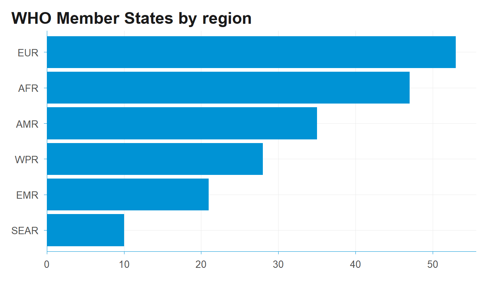

One tidy workflow for WHO GHO and UN SDG data in R: introducing DSIR
DSIR bundles WHO Member State metadata, lightweight clients for the GHO and UN SDG indicator APIs, and reusable WHO-style ggplot2 and flextable themes — so global-health data work in R takes less glue code and produces consistent charts and tables.
R
global health
WHO
SDG
ggplot2
Author
Shanlong Ding
Published
June 2, 2026
If you have ever pulled indicator data from both the WHO Global Health Observatory (GHO) and the UN SDG database in the same project, you know the small frictions add up. The two APIs speak different dialects: GHO keys countries by ISO3 codes, the SDG API by UN M49 numeric codes. Their responses come back with different column names and different shapes. So before you can do any actual analysis, you end up writing — and rewriting — the same glue code to align them.
DSIR (“Data Science Infrastructure for Global Health”) is a small R package I wrote to take that friction away. It bundles country metadata, lightweight clients for the GHO and SDG APIs that return a single shared schema, and a set of WHO-style ggplot2 and flextable themes so the output already looks like something you can drop into a report.
It is on CRAN:
install.packages("DSIR")
Country metadata you don’t have to maintain
A surprising amount of global-health code starts by hand-maintaining a list of countries, regions, and ISO codes. DSIR ships that as data. who_countries is a tibble of all 194 WHO Member States, with ISO3 / ISO2 / UN M49 codes, official and short names, WHO region, and a flag for Pacific Island Countries:
# A tibble: 28 × 3
iso3 name_short is_pic
<chr> <chr> <lgl>
1 AUS Australia FALSE
2 BRN Brunei Darussalam FALSE
3 KHM Cambodia FALSE
4 CHN China FALSE
5 COK Cook Islands TRUE
6 FJI Fiji TRUE
7 IDN Indonesia FALSE
8 JPN Japan FALSE
9 KIR Kiribati TRUE
10 LAO Lao PDR FALSE
# ℹ 18 more rows
There are also ready-made ISO3 vectors for each region — wpro_cty, afro_cty, euro_cty, and so on — that you can pass straight into the data functions. No more pasting country lists between scripts.
A consistent “search → fetch → clean” rhythm
Both API clients follow the same three-step rhythm, so once you’ve learned one you’ve learned both.
For GHO, you can search for an indicator, check coverage before committing to a download, then fetch and tidy:
# Search indicators by keywordgho_indicators("mortality")# Fetch premature NCD mortality for the Western Pacific, then tidyraw <-gho_data("NCDMORT3070", spatial_type ="country", area = wpro_cty)gho_clean(raw)
The SDG client works exactly the same way — and crucially, its area argument also accepts ISO3 codes, converting to M49 internally, so the same regional vectors just work:
The payoff: one schema, so you can just stack them
Here is the part that saves the most time. gho_clean() and sdg_clean() both return the same 15-column schema (source, id, indicator, location, iso3, year, value, value_num, …). Because the shape is identical, GHO and SDG output combine directly — no manual renaming, no reconciling code systems:
gho <-gho_data("NCDMORT3070", area = wpro_cty) |>gho_clean()sdg <-sdg_data("3.4.1", area = wpro_cty) |>sdg_clean()bind_indicators(gho, sdg) # keep track of origin via the `source` column
That source column means you never lose track of where a row came from, even after you’ve stacked half a dozen indicators from both APIs.
Charts and tables that already look like WHO
The other recurring cost in this kind of work is making every chart and table look consistent across a report. DSIR includes publication-ready themes so you don’t restyle from scratch each time. Here theme_dsi() and scale_y_dsi_col() (which removes the gap between bars and the axis) do the work:
library(ggplot2)who_countries |>count(who_region) |>ggplot(aes(reorder(who_region, n), n)) +geom_col(fill ="#0093D5") +coord_flip() +scale_y_dsi_col() +theme_dsi() +labs(title ="WHO Member States by region", x =NULL, y =NULL)

For multi-panel layouts there’s theme_dsi_facet(), and for tables dsi_flextable_defaults() sets booktabs styling, bold headers and sensible padding in one line. The point is that a chart pulled straight from who_countries or a cleaned indicator already carries a consistent WHO look, without per-plot fiddling.
It’s early days and the package is small by design — it does the unglamorous data-plumbing so the analysis can start sooner. If you work with WHO or SDG data in R and find it useful, I’d love to hear what’s missing; issues and suggestions are very welcome. And if it saves you some glue code, a GitHub star helps other people working on global health find it too.